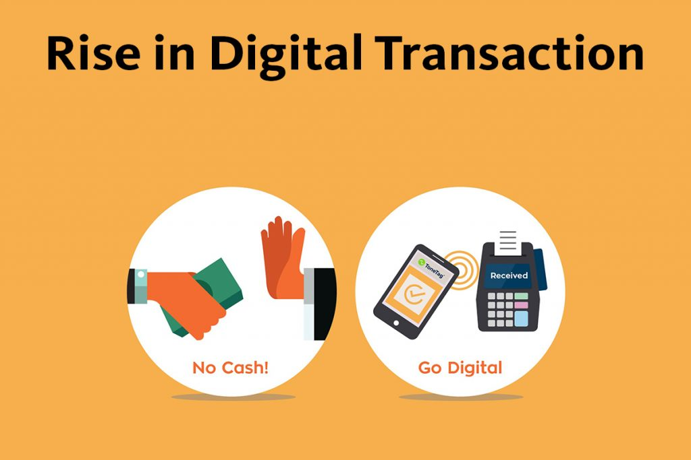

Introduction
What is A Digital Transaction?
A digital transaction is the electronic transfer of money from one account to another without the use of physical money.
This includes methods like online banking, mobile wallets, and digital payment platforms such as UPI (Unified Payments Interface), credit/debit cards, and cryptocurrency transactions.
These transactions offer convenience, speed, and security, and have significantly contributed to the growth of the digital economy. They are used for a wide range of activities, from online shopping to paying bills and transferring money between individuals.
Benefits Of Digital Transactions
- Convenience: Digital transactions can be done anytime and anywhere, providing great convenience to users.
- Speed: Transactions are processed quickly, often in real-time, reducing the waiting period.
- Security: Enhanced security measures protect against fraud and unauthorized access.
- Cost-Efficiency: Reduces the costs associated with handling and processing physical cash.
- Transparency: Digital records of transactions promote transparency and easy tracking of expenses.
- Accessibility: Enables financial inclusion by providing access to banking services for people in remote areas.
- Environmental Impact: Reduces the need for paper-based transactions, contributing to environmental sustainability.
Methods of Digital Payments
- UPI (Unified Payments Interface)
- Mobile Wallets
- Credit and Debit Cards
- Internet Banking
- Cryptocurrencies
Impact on the Indian Economy
Digital payments have revolutionized the Indian economy by:
- Enhancing Financial Inclusion
- Promoting Transparency
- Boosting Economic Growth
- Reducing Dependency on Cash
- Improving Efficiency in Transactions
Case Studies
Case studies of successful digital payment platforms in India include:
- PhonePe
- Google Pay
- Paytm